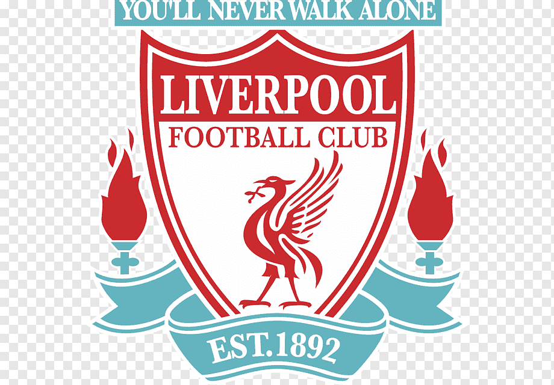
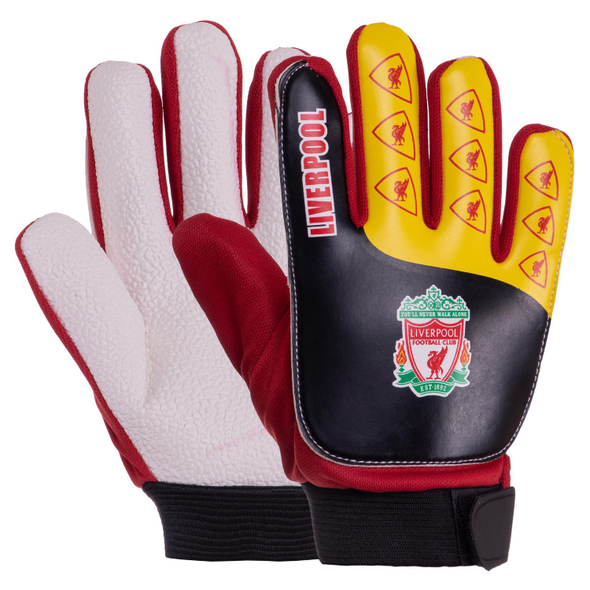
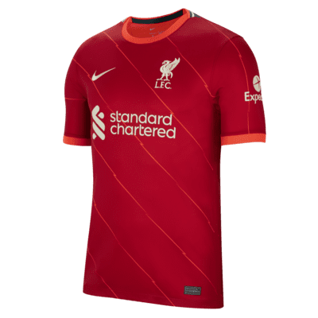
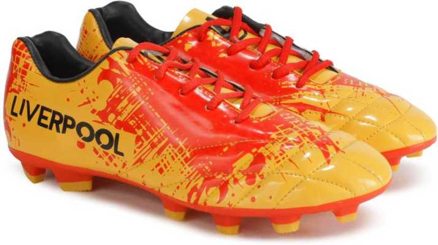
Для подробной информации - открой фотографию футболиста
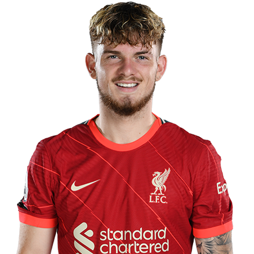
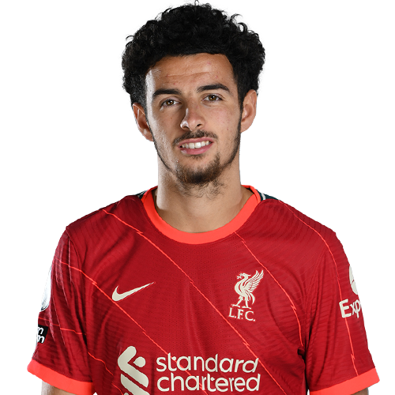
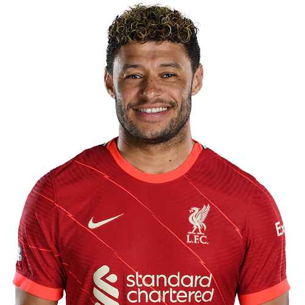
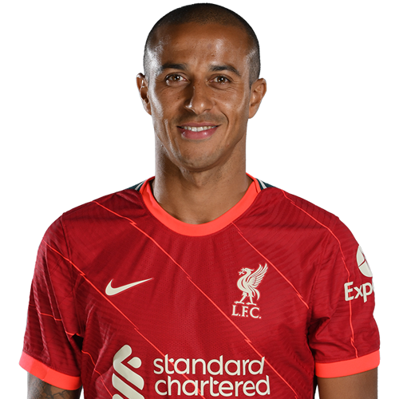
Halfbacks (Midfielder) - Полузащитник.
Игрок футбольной команды, действующий между защитой и нападением.
Основной задачей полузащитников является помощь игрокам обороны и нападения, в зависимости от игровой ситуации.


 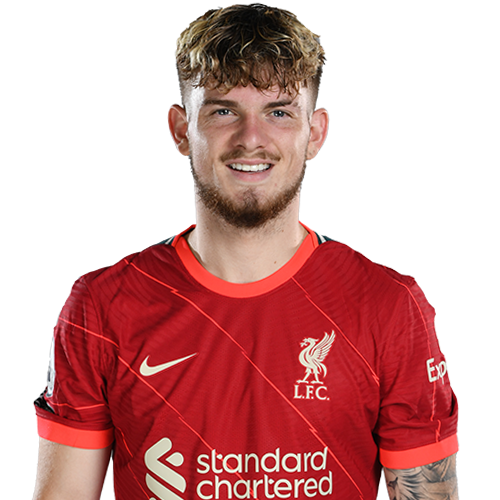
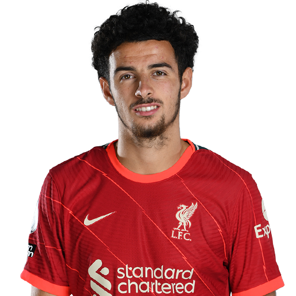
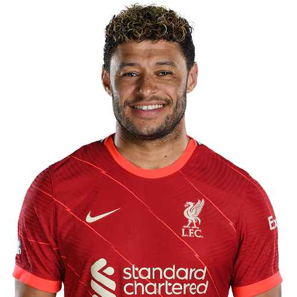
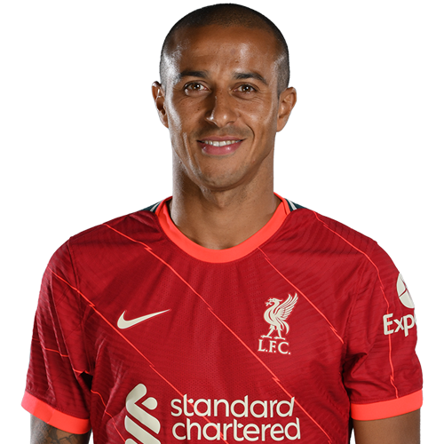
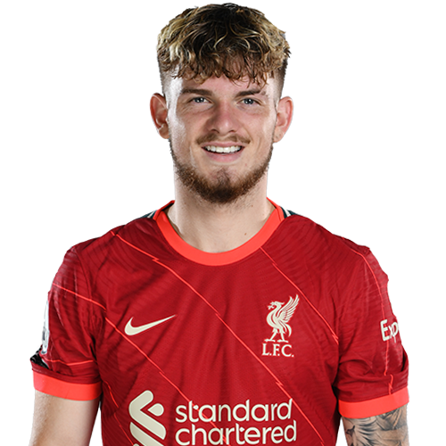
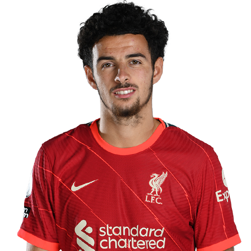
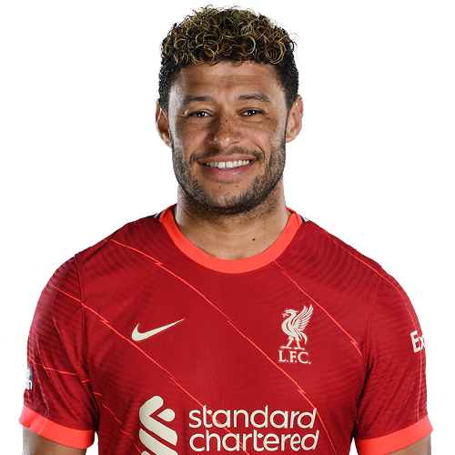
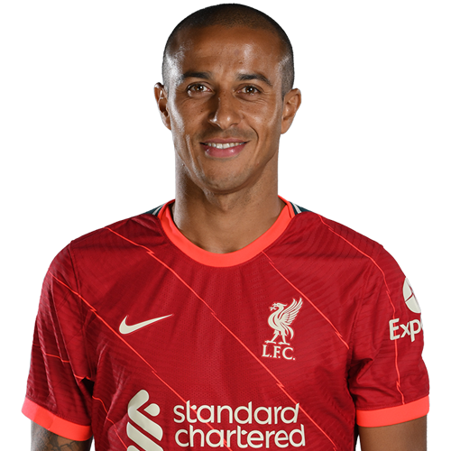